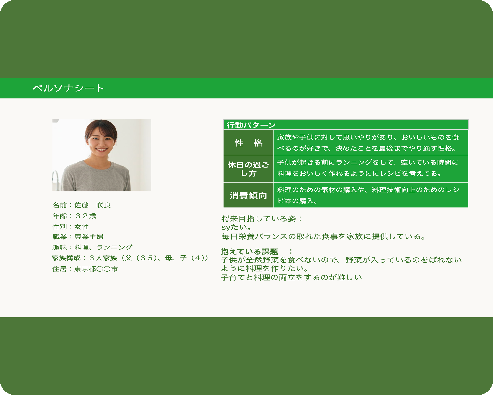
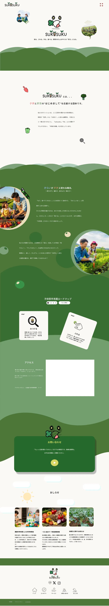

架空サイトすくすく
- #課題制作
- #Webデザイン
授業制作として江別市の居住促進のための架空Webサイト制作をしました。江別市転入アンケート調査結果を元に、江別市の課題として『野菜の特産品の認知度の低さ』と『子育て支援の認知度が低い』ことに焦点を当て、取り組みました。
使っているソフト
Figma
Illustrator
制作期間
7週間
メンバー
デザイナー
プログラマー
ディレクター
担当した役割
デザイナー
プログラマー

Target
東京都内で夫と4歳の息子と暮らす、料理好きな専業主婦の佐藤咲良さん（32歳）。朝のランニングと日々のレシピ研究が日課ですが、現在は「息子の野菜嫌いを克服するため、バレずに食べられる料理を作る」ことに苦戦中。将来的には主婦業を続けながら、自身の料理教室を開くこと。

Purpose
江別市の課題解決を通じて魅力を市外へ発信し、移住・定住へ繋げること
Concept
江別市でみつける、野菜と育つ「のびのび子育て」
ターゲットの悩みである『子供の野菜嫌いの解決』と『自然の環境で育てたい思い』と江別市の課題である『野菜の特産品の認知度の低さ』と『子育て支援の認知度が低い』ことの二つのからWebサイトでの食育体験の紹介で、現状を解決しようと考えた。
Design
本サイトのデザインでは、大人から子どもまで幅広い層に親しんでもらえるよう、難しい漢字を避けた表記や、温かみのあるタッチのイラストを採用しました。
カラー計画では、江別市の豊かな自然をダイレクトに表現するため、深みのある「フォレストグリーン」をメインカラーに設定。さらに、ユーザーの目を引く遊び心あるWeb演出として、トップページ上層ではスクロールに連動して山が追従する視覚効果（パララックス効果）を設計しました。
地域のアイデンティティを表現しつつ、直感的に楽しめるUI/UXを追求しています。

others